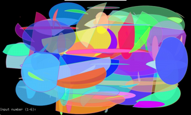

このページは クリエイティブ・コモンズ 表示-非営利-継承 4.0 国際ライセンスの下に提供されています。
© 2017 Toshi Nagata. Facebook: toshi.nagata.319 WebSite: http://blog.d-alchemy.xyz/
rpi-ljsc は、Raspberry Pi の luajit で OpenVG を使ってフレームバッファ描画をするツールです。ジョイスティック・タッチパネル・サウンド出力の簡単なサポートもあるので、タッチパネル液晶を使ったガジェットを作ったり、ゲームを作ったりすることもできます。X window を使わずフレームバッファに直接描画するので、高速に動作します。
[ ダウンロードページへ → ]